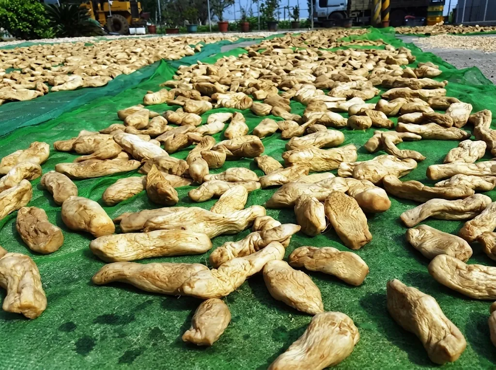

條仔脯
經過反覆醃漬與翻曬，保留蘿蔔的嚼勁和回甘。切片炒蛋，或切段入湯。


品牌故事
「埕」是古厝前的院子，也是我們一家人翻曬蘿蔔的地方。民國六十年，我們在清水創立「振盛」，從自己種蘿蔔開始，把一家人的手藝做成一門生意。
後來，年輕一代回到家鄉，接手田裡和埕上的工作。一刀一刀切，趁晴天一回一回翻曬。菜脯的香氣和口感，就在這些每天重複的工夫裡慢慢成形。
看看我們怎麼做菜脯日曬菜脯
從爽脆的切脯到醇厚的老菜脯，
挑一款，為家常菜添香。
經過反覆醃漬與翻曬，保留蘿蔔的嚼勁和回甘。切片炒蛋，或切段入湯。

手工切條，以粗海鹽醃漬，曬出香氣與爽脆口感。炒菜、配粥都合適。

以秋冬採收的白蘿蔔製成細絲，適合炒香做草仔粿內餡，也能拌入米糕。

又稱黑菜脯，經過多年醃藏，風味濃厚。燉雞湯時加幾片，讓滋味慢慢入湯。
從田裡到曬埕

紅土農產
跟著節氣種植、採收，
讓清水的土地為餐桌添一點香。

殼薄、仁飽滿，適合鹽炒、做花生糖，也可榨油。

帶有濃郁的堅果香，炒香後可入菜，也能榨成麻油。

隨季節採收。想知道近期有哪些蔬果，歡迎來電詢問。

用自家花生與黑芝麻榨油，依收成季節限量供應。
媒體報導
聯絡菜脯埕
歡迎來電或私訊，詢問品項、供應情況與購買方式。